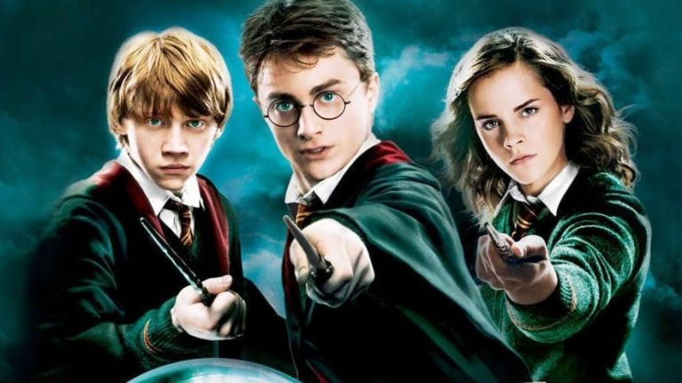

Harry Potter is the main hero in the series but needs help from multiple friends. No other friends were more helpful or loyal than Ronald Weasley and Hermione Granger!
Ronald Weasley is one of Harry's two best friends. They became friends on the first day of Wizarding school and coiuld harldy be separated.
Hermione Granger is Harry's other best friend. She is a Muggle but she doesn't let that stop her from being one of the smartest witches of her time.
